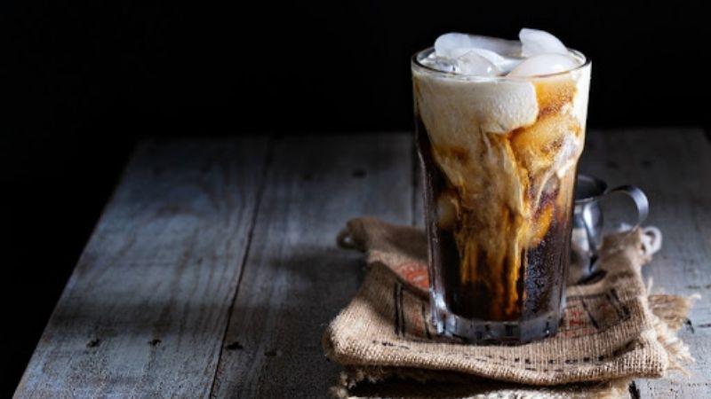

Bạc Xỉu
“Bạc” có nghĩa là màu trắng, “tẩy” là chiếc ly không, “xỉu” là một chút và “phé” là cà phê. Như vậy, bạc xỉu không phải là cà phê sữa mà có thể hiểu là sữa nóng pha thêm một ít cà phê.

Ingredients
- Bột cà phê: 20-25g
- Nước đun sôi
- Sữa đặc: 20-40g
- Đá bào
- Tiến hành lấy 30 gram cà phê bột pha phin. Tuy nhiên, không đổ hết 1 lần nước sôi mà phải chia thành hai đợt. Đợt 1 chỉ rót 10ml nước sôi để bột cà phê được thấm đều và nở ra hết. Sau khoảng 1 phút mới rót 100ml nước sôi còn lại vào.
- Sau đó cho phần nước cà phê vừa pha vào bình Shake lắc nhẹ nhằm tạo bọt. Tiếp theo đó, cho phần sữa tươi, sữa đặc vào ly và đổ hỗn hợp này vào cà phê đã tạo bọt, thêm ít đá bào là bạn đã có được ly bạc xỉu đá đơn giản nhưng thơm ngon và hấp dẫn.